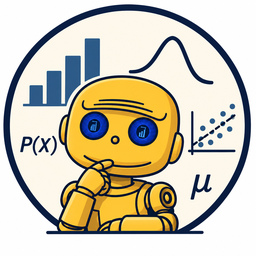
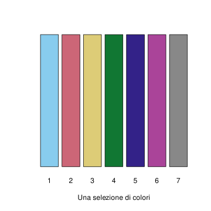

exp(2)[1] 7.389056Appunti del corso
A.A. 2023-2024

Questo libro raccoglie i contenuti delle lezioni del corso Probabilità e Processi Stocastici (codice 455AA) relativi all’anno accademico 2023-2024, presso il corso di laurea in Ingegneria Robotica e dell’Automazione dell’Università di Pisa. Nelle edizioni precedenti il corso si basava su alcuni appunti scritti dal prof. Franco Flandoli, tuttavia da un paio di anni ho cercato di accogliere le critiche di alcuni studenti che ne notavano la natura frammentaria – si trattava infatti di una selezione di capitoli, seguendo gli argomenti trattati in questo corso – e a volte la distanza tra quanto svolto a lezione e il testo scritto.
Per questa ragione ho sostanzialmente ripreso ed elaborato gli appunti in modo che siano più organici e aderenti alle lezioni. Ho unificato alcune dimostrazioni che erano sostanzialmente ripetute e del tutto rimossi argomenti che ho ritenuto marginali, in modo da recuperare ore utili nelle lezioni per lo svolgimento di esercizi e la discussione di problemi. Ho inoltre posto maggiormente l’attenzione al problema della stima dei parametri di un modello probabilistico a partire da dati osservati: negli anni precedenti la discussione si concentrava sui teoremi limite, che in questa edizione sono stati spostati alla fine (come risultati principalmente teorici) e invece ci si concentra di più sulla determinazione analitica o numerica di opportuni stimatori – di massima verosimiglianza o bayesiani. Tutti modelli che presentiamo, dalle variabili gaussiane alle catene di Markov, contengono ora una sezione dedicata alla stima dei parametri, accennando ai vari metodi e includendo esempi svolti.
Ho colto anche l’occasione per rendere più integrato l’uso del linguaggio R come strumento per la visualizzazione e di ausilio alla risoluzione di problemi: negli anni precedenti erano riservate intere ore di lezione-laboratorio, separate dalle lezioni frontali, che tuttavia a volte divagavano e contenevano cenni di argomenti che non sono oggetto del corso. In questa edizione accompagneremo direttamente la teoria con codice R utile (si spera) ad una migliore comprensione e studio degli esempi. Il codice è presentato nel testo in blocchi separati, e l’output è visualizzato direttamente sotto i blocchi, con le eventuali immagini. Per una introduzione su come installare R (e l’interfaccia grafica RStudio) e i comandi di base si rimanda all’appendice Capitolo 9.
Per fare un esempio, il seguente codice R calcola il numero \(e^2\) usando la funzione exp(). Vediamo prima il blocco di codice e nella riga sotto l’output.
exp(2)[1] 7.389056Osservazione. In tutto il corso faremo uso di tonalità di colore opportunamente selezionate in modo da essere distinguibili generalmente anche da persone che hanno difficoltà nella percezione del colore. Per questo introduciamo un vettore (tratto in realtà dalla palette Safe nella libreria rcartocolor) contenente alcuni codici associati a determinati colori cui faremo sempre riferimento in seguito.
miei_colori = c("#88CCEE", "#CC6677", "#DDCC77", "#117733", "#332288", "#AA4499", "#888888")
# mostriamo i colori in un barplot
barplot(rep(1,7), col=miei_colori, names.arg = as.character(1:7), xlab = "Una selezione di colori", axes=FALSE)
Ogni sezione include alla fine un paio di esercizi (di solito varianti degli esempi visti nel testo) che si suggerisce di provare svolgere in autonomia, senza rinunciare all’ausilio di opportuno codice R. Ogni capitolo contiene inoltre una sezione conclusiva di problemi da svolgere, analoghi a quelli della prova scritta dell’esame. Si consiglia di risolverli sia analiticamente che numericamente tramite opportuni comandi R.
Sicuramente questi appunti, come pure il corso stesso, possono essere migliorati: sono sempre disponibile ad ascoltare le vostre osservazioni, i suggerimenti e le eventuali critiche. Inoltre sono purtroppo consapevole che gli errori tipografici in queste pagine abbondano, e invito tutte e tutti a segnalarli via e-mail in modo che possa correggerli tempestivamente1.
Ringrazio gli studenti Matteo Di Pietro, Francesco Paolo Carmone, Matteo Mariani per le segnalazioni.↩︎